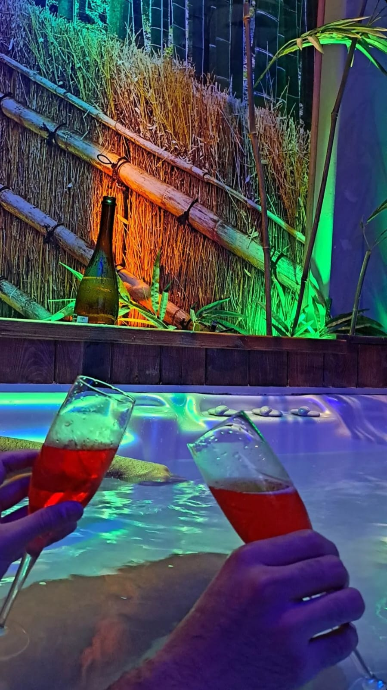
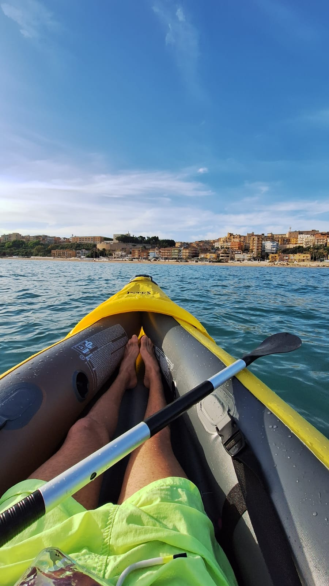

BIOGRAFIA
Sono Francesco, ho 22 anni e ho scelto la programmazione per dare sfogo alla mia intensa immaginazione, come mestiere nella mia vita.
Sin da piccolo, ho aiutato e continuo tutt'ora ad aiutare coetanei e persone più grandi di me a risolvere i loro problemi informatici. Adesso mi sto dedicando alla creazione di siti web e web app, potendo così essere d'aiuto alle persone attraverso l'informatica. In questa pagina, voglio trasmettere lo Spirito con cui affronto la vita, grazie a un'attenta introspezione, condividendo alcune attività che mi piacciono o mi interessano.
Hobby personali
Carattere
Adattabile, collaborativo, sincero.
Non mi piace inserirmi in situazioni in cui non posso essere leale con me stesso e libero. Amo e sono a favore del diritto di parola, mi piace poter dare sfogo alle idee e agli obiettivi per un buon futuro. Sono determinato e ho un forte senso di responsabilità.

Piaceri
Mi piace concedermi un po' di relax e piacere, anche esagerando un po', non badando ai prezzi o ai bisogni. Dio mi concede ogni giorno sempre di più di quello di cui ho bisogno e gliene sono grato. Mi piace ritrovare l'equilibrio, la forza e la carica per superare momenti difficili.
15/08/23Viaggiare
Credo che non ci sia sensazione più bella di salire su un aereo e poter conoscere persone, luoghi e culture, anche in Italia. Spero un giorno di poter lavorare con questo lavoro da remoto, così da poter conoscere e viaggiare per il mondo.
16/02/23Momenti
Momenti
